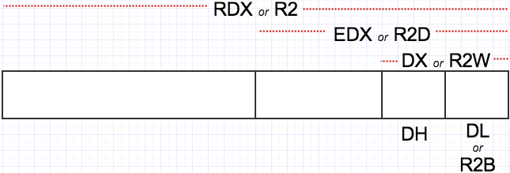

There are hundreds of instructions. You can’t learn them all at once. Just start with these:
mov x, y x ← y
and x, y x ← x and y
or x, y x ← x or y
xor x, y x ← x xor y
add x, y x ← x + y
sub x, y x ← x – y
inc x x ← x + 1
dec x x ← x – 1
syscall Invoke an operating system routine
db A pseudo-instruction that declares bytes that will be in memory when the program runs
Register Operands
In this tutorial we only care about the integer registers and the xmm registers. You should already know what the registers are, but here is a quick review. The 16 integer registers are 64 bits wide and are called:
R0 R1 R2 R3 R4 R5 R6 R7 R8 R9 R10 R11 R12 R13 R14 R15
RAX RCX RDX RBX RSP RBP RSI RDI
(Note that 8 of the registers have alternate names.) You can treat the lowest 32-bits of each register as a register itself but using these names:
R0D R1D R2D R3D R4D R5D R6D R7D R8D R9D R10D R11D R12D R13D R14D R15D
EAX ECX EDX EBX ESP EBP ESI EDI
You can treat the lowest 16-bits of each register as a register itself but using these names:
R0W R1W R2W R3W R4W R5W R6W R7W R8W R9W R10W R11W R12W R13W R14W R15W
AX CX DX BX SP BP SI DI
You can treat the lowest 8-bits of each register as a register itself but using these names:
R0B R1B R2B R3B R4B R5B R6B R7B R8B R9B R10B R11B R12B R13B R14B R15B
AL CL DL BL SPL BPL SIL DIL
For historical reasons, bits 15 through 8 of R0..R3 are named:
AH CH DH BH
And finally, there are 16 XMM registers, each 128 bits wide, named:
XMM0 ... XMM15
Study this picture; hopefully it helps:

Memory Operands
These are the basic forms of addressing:
[ number ]
[ reg ]
[ reg + reg*scale ] scale is 1, 2, 4, or 8 only
[ reg + number ]
[ reg + reg*scale + number ]
The number is called the displacement; the plain register is called the base; the register with the scale is called the index.
Examples:
[750] ; displacement only
[rbp] ; base register only
[rcx + rsi*4] ; base + index * scale
[rbp + rdx] ; scale is 1
[rbx - 8] ; displacement is -8
[rax + rdi*8 + 500] ; all four components
[rbx + counter] ; uses the address of the variable 'counter' as the displacement
Immediate Operands
These can be written in many ways. Here are some examples from the official docs.
200 ; decimal
0200 ; still decimal - the leading 0 does not make it octal
0200d ; explicitly decimal - d suffix
0d200 ; also decimal - 0d prefex
0c8h ; hex - h suffix, but leading 0 is required because c8h looks like a var
0xc8 ; hex - the classic 0x prefix
0hc8 ; hex - for some reason NASM likes 0h
310q ; octal - q suffix
0q310 ; octal - 0q prefix
11001000b ; binary - b suffix
0b1100_1000 ; binary - 0b prefix, and by the way, underscores are allowed